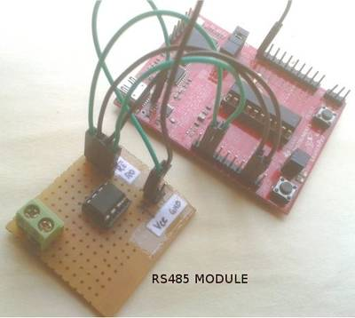
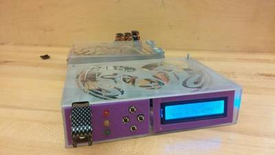
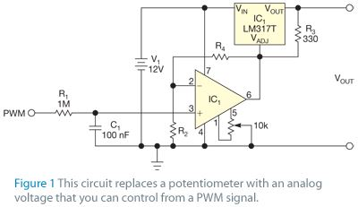
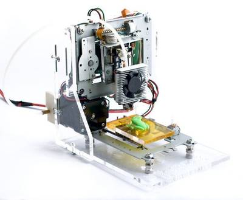

2016-02-25 - Nº 43

Editorial
Aqui está a Newsletter Nº 43 no seu formato habitual. Agora às quintas-feiras. Se gostar da Newsletter partilhe-a!
Todas as Newsletters encontram-se indexadas no link.
Esta Newsletter tem os seguintes tópicos:
Esta semana a Microchip lançou uma plataforma baseada na Cloud para a programação dos seus Microcontroladores. A ARM apresentou o Cortex-R8 que vai permitir velocidades muito elevadas no 5G. A Samsung apresenta o seu eco-sistema aberto IoT baseado na plataforma ARTIK. A Google apresenta a sua "Cloud Vision API" uma interface que permite detectar e identificar objectos, ler texto ou identificar logotipos nas imagens
Na Newsletter desta semana apresentamos diversos projetos de maker e na rubrica "Documentação" apresentamos quatro livros (eBooks) que podem ser descarregados livremente e que esta semana são sobre programação em PHP, um livro sobre ADA, um livro sobre a utilização da linha de comando em Linux e um livro sobre introdução à programação em GO. São também apresentados 6 livros que foram editados digitalmente pela UsBorne e que embora já sejam antigos ainda retêm informação útil. Por fim, na rubrica Gadgets em Destaque falamos do PSOC5 LP da Cypress, num artigo escrito em colaboração com o João Nuno Carvalho e que permite dar os primeiros passos com este Kit.
 João Alves ([email protected])
João Alves ([email protected])
O conteúdo da Newsletter encontra-se sob a licença  Creative Commons Attribution-NonCommercial-ShareAlike 4.0 International License.
Creative Commons Attribution-NonCommercial-ShareAlike 4.0 International License.
Novidades da Semana ^
-
"Samsung Electronics, the world leader in advanced memory technology, announced that it is now mass producing the industry’s first 256-gigabyte (GB) embedded memory based on the Universal Flash Storage (UFS) 2.0 standard, for next-generation high-end mobile devices. The newly introduced embedded memory features outstanding performance for mobile devices that exceeds that of a typical SATA-based SSD for PCs."
ATtiny102/104 are self-programmable, 8- and 14-pin tinyAVR MCUs
"Making its debut at Embedded World 2016, Atmel has returned to its old-school ways with the world’s highest-performance, low-power, 8-bit microcontrollers boasting 1KB Flash memory. The all-new ATtiny102/104 run up to 12MIPS and integrate features previously only available in larger more expensive MCUs, making them ideal for smaller applications including logic replacement and the latest cost-optimized applications in the consumer, industrial and home automation markets."
Braille Maps for Blind and Visually Impaired Created with 3-D Printing Technology at Rutgers
"Using a high-tech 3-D printer, a Rutgers undergraduate and his professor created sophisticated braille maps to help blind and visually impaired people navigate a local training center. The three plastic tactile maps are for each floor at the Joseph Kohn Training Center, a state-funded facility for the blind and visually impaired in New Brunswick. And the goal is to print maps for all of the center’s students."
Ciência e Tecnologia ^
How to make electrons behave like a liquid
"Electrical resistance is a simple concept: Rather like friction slowing down an object rolling on a surface, resistance slows the flow of electrons through a conductive material. But two physicists have now found that electrons can sometimes cooperate to turn resistance on its head, producing vortices and backward flow of electric current. The prediction of “negative resistance” is just one of a set of counterintuitive and bizarre fluid-like effects encountered under certain exotic circumstances, involving systems of strongly interacting particles in a sheet of graphene, a two-dimensional form of carbon. The findings are described in a paper appearing today in the journal Nature Physics, by MIT professor of physics Leonid Levitov and Gregory Falkovich, a professor at Israel’s Weizmann Institute of Science."
Physicists prove new potential for silicon chips
"SCIENTISTS have opened a door to faster, cheaper telecommunications after proving a new link between silicon chips and ‘rare-earth’ metals used in internet signalling. Silicon is the ‘gold standard’ semiconductor at the heart of the computer industry but lacks the ability to produce, detect and amplify the light signals that are sent down optical fibre. For the amplification of these light signals, we rely on rare-earth elements, which were thought to not interact optically with silicon. However physicists at the University of Salford and the University of Surrey have made a novel discovery by showing for the first time, that light can be generated by an electron ‘jumping’ directly between silicon and rare-earths."
Fast Radio Bursts: First Distance Measurement
"Have we finally traced a Fast Radio Burst to its place of origin? News from the CSIRO (Commonwealth Scientific and Industrial Research Organisation) radio telescopes in eastern Australia, along with confirming data from the Japanese Subaru instrument in Hawaii, suggests the answer is yes. Fast Radio Bursts (FRBs) are transient radio pulses that last scant milliseconds. In that amount of time, they have been known to emit as much energy as the Sun emits in 10,000 years. And exactly what causes FRBs is still a mystery. Take the so-called ‘Lorimer Burst’ ( FRB 010724) which was discovered in archival data from 2001 at the Parkes radio telescope in New South Wales. Here we’re dealing with a 30-jansky dispersed burst that was less than 5 milliseconds in duration. Although the burst appeared roughly in the direction of the Small Magellanic Cloud, the FRB is not thought to be associated with our galaxy at all. A 2015 event, FRB 110523, was discovered in data from the Green Bank dish in West Virginia, with an origin thought to be as much as six billion light years away."
Mechanoresponsive Healing Polymers
"NASA Langley Research Center is developing an innovative self-healing resin that automatically reacts to mechanical stimuli. Current structural materials are not self-healing, making it necessary to depend on complicated and potentially destructive repair methods and long down times. Unlike other proposed self-healing materials that use microencapsulated healing agents, this technology utilizes viscoelastic properties from inherent structure properties. The resulting technology is a self-healing material with rapid rates of healing and a wide range of use temperatures."
NIST Physicists Show ‘Molecules’ Made of Light May Be Possible
"It’s not lightsaber time, not yet. But a team including theoretical physicists from the National Institute of Standards and Technology (NIST) has taken another step toward building objects out of photons, and the findings* hint that weightless particles of light can be joined into a sort of “molecule” with its own peculiar force. The findings build on previous research that several team members contributed to before joining NIST. In 2013, collaborators from Harvard, Caltech and MIT found a way to bind two photons together so that one would sit right atop the other, superimposed as they travel. Their experimental demonstration was considered a breakthrough, because no one had ever constructed anything by combining individual photons—inspiring some to imagine that real-life lightsabers were just around the corner."
Curly Nanowires Catch More Light to Power Nanoscale Electronic Circuits
"Researchers from Bilkent University, Ankara, Turkey, have shown that twisting straight nanowires into springs can increase the amount of light the wires absorb by up to 23 percent. Absorbing more light is important because one application of nanowires is turning light into electricity, for example to power tiny devices."
Documentação ^
A documentação é parte essencial do processo de aprendizagem e a Internet além de artigos interessantes de explorar também tem alguma documentação em formato PDF interessante de ler. Todos os links aqui apresentados são para conteúdo disponibilizado livremente pelo editor do livro.
Livros

-
"In a world where web services can make real-time data accessible to anyone, how can the government leverage this openness to improve its operations and increase citizen participation and awareness? Through a collection of essays and case studies, leading visionaries and practitioners both inside and outside of government share their ideas on how to achieve and direct this emerging world of online collaboration, transparency, and participation."
Making Games with Python & Pygame
" This book will teach you how to make graphical computer games with the Pygame framework (also called the Pygame library) in the Python programming language. Pygame makes it easy to create programs with 2D graphics. Both Python and the Pygame framework can be downloaded for free from http://python.org and http://pygame.org. All you need is a computer and this book to begin making your own games."
-
"The book begins by addressing introductory and general topics, before gradually exploring more complex types of data munging."
GTK+ / Gnome Application Development
"GTK+/Gnome Application Development is an intermediate-to-advanced GTK+/Gnome programming book. You should be comfortable with programming (data structures, algorithms, etc.) and with the C programming language before you try to read it. It's also helpful to have had some introductory exposure to GTK+, via the online tutorial or Eric Harlow's book Developing Linux Applications with GTK+ and GDK (buy from Amazon). However, if you know C and are willing to jump right in you could start with my book, perhaps in conjunction with the GTK+ reference documentation."
Modelos 3D ^
Com a disponibilidade de ferramentas que permitem dar azo a nossa imaginação na criação de peças 3D e espaços como o thingiverse para as publicar, esta rubrica apresenta alguns modelos selecionados que poderão ser úteis.
Raspberry Pi Case
A base Raspberry Pi case created in OpenSCAD. Wanted a simple base that could be used to build up more complex cases. The hole for the power cable is a little small so a standard phone charger isn't very tight.
Raspberry Pi 2 Case (OpenSCAD)
Inspired from other cases I created a fully customizable case with OpenSCAD. You can also add a logo as dxf, please check the source. Therefore I uploaded the Source twice where the difference is only: logo_use_it=true; use_ventilation=false;
It is also possible to lock the case with a little screw on the left side. Simply drill hole between the case and the front cover. Please remove your Raspberry Pi 2 first ;-)
The Ultimate Parametric Box
As any electronic hobbyist, I always need some enclosures to protect my circuits, and of course make them more user friendly. More over, with the news mini/micro/nano boards, like Arduino, Raspberry/Banana/Orange pies and so on, enclosures are more needed than never before.
Since a moment I'm thinking about taking a look at OpenScad, just to see what can we do with, and learn how it works. Plus I love the Thingiverse Customizer, very usefull for those who don't know how to modelise in 3D, or basically, want to have something fast and easy.
So, I started this project....
It was a good starting way to learn, for me.
Projetos Maker ^
Diversos Projetos interessantes.
Raspberry PI Zero LEDStrip Controller
"The Raspberry Pi Zero has been out for quite a while now and inspiring projects with the Pi Zero pop up everywhere on maker websites. The 5 dollar Pi inspired me (Marcel Brouwers) and Chris Kuipers to start a project to control RGB ledstrips using our mobile phone. Sure, there are commercial off the shelf products with fancy Apps that let you control ledstrips, but that doesnt give you the satisfaction achieved by making this yourself. The solution we put together consists of a Raspberry Pi Zero and a custom PCB that takes care of the 12 volt to 5 volt power conversion for the Pi Zero and transistors for controlling the ledstrip (For more info on the hardware, see the hardware section of this post). For controlling the ledstrip via the browser we combined the pi-blaster software, a lighttpd install with php, the bootstrap framework and some php scripts. (For more info on the software, see the software section of this post)"
Arduibag: a connected backpack for bike riders
"Arduibag is a connected backpack for bike riders. It is also an open source project created by two passionate french guys: Michal DAURIA and Stphane DE GRAEVE. You can freely use all the information from this site: schematics, source code, 3D files."
Arduino Nano with DHT sensor & OLED
"In this tutorial I'll describe how to use a DHT sensor on an Arduino Nano and OLED display."
Adding touch screen to Siglent SDS1022c Oscilloscope
"guide on how to add a touch screen on a Siglent SDS1022c Oscilloscope. For that purpose he used an Arduino Nano and a touch screen panel from Prestigo 7? tablet. He discuss about the keyboard protocol, the display driver and the touch screen and shows us how to make it work as an alternative interface for his oscilloscope."
-
"This project is used to switch the electrical appliances remotely using TV remote. It uses philips RC5 protocol based remote. The micro controller used is of Atmel i.e. at89c2051 of 8051 type. I have used triacs instead of relays to switch the AC appliance due to the reason of switching speed of circuit."
10 Resister Arduino Waveform Generator
"The circuit implements a 6-Bit Digital to Analog Converter (DAC) using a 8-4-2-1 Resistor combination. Arduino Uno Output pins 13 to 9 form the 6-Bits PB5 to PB0."
Raspberry Pi Beekeeping Server
"Beekeeping (or apiculture, from Latin: apis "bee") is the maintenance of honey bee colonies, commonly in hives, by humans. A beekeeper (or apiarist) keeps bees in order to collect their honey and other products that the hive produces (including beeswax, propolis, pollen, and royal jelly), to pollinate crops, or to produce bees for sale to other beekeepers. A location where bees are kept is called an apiary or "bee yard"."
Prelude to Automation - Hacking a Remote
"A few weeks ago, I read up on an Arduino project to create a home automation system. Being a electronic hobbyist, I wanted to be aware of the limits of my skill sets before attempting something like this. One of my major pain points was to open up a remote control, and hack in a microprocessor to manage this remote via a software program. This involved soldering very small contact points on electronic circuit boards. Cost of the components aside, I wanted to be sure that once I started on an automation project, I would be able to complete it without destroying any of the major functional components such as the remote control. This instructable is a "flight simulator version" of a web-based home automation system that I intend to put together in the next few days to come."
-
"I have recently moved to a new apartment and was looking for a PWM dimmer to control some 12V LED strips. I thought that should be easy enough nowadays but it proved more difficult than I thought. All I found either didnt meet my requirements, were uggly or expensive. So I decided to build my own, tailor-made to my needs."
-
"A year or so ago, I hacked a Belkin WeMo switch and coupled the WIFI board to an Arduino Uno along with a little code and sensors to create a way to control my garage door. The system worked well as I could not only control the door, but I could see the door's state in the WeMo App on my iPhone. The only problems were that the parts were fairly expensive ($50 for the WeMo and $20 for the Arduino + sensors) and the sensors (magnetic reed relay or hall effect) were difficult to install reliably in the garage. So I set out to simplify the design. I wanted to reduce the price and also make the installation something a typical homeowner might be able to do. The new design uses an internet development chip/system called the Particle Photon. The system is essentially an arduino type processor coupled to a WIFI chip on a single board the size of a couple of postage stamps. The Photon is just $20 compared to $70 for the first design."
RS485 Communication Using MAX485 and MSP430 Launchpad

"Here we are going to interface a MSP430 Launchpad with a RS485 transceiver chip like MAX485 and communicate with an x86 PC. Serial(TTL) or RS232 protocol is fine if you are planning to communicate over short distances of a few meters,when you increase the range to a few 100 meters RS232 protocol will become inadequate. For long distance wired communication you have to use a different protocol called RS485 which can communicate over a kilometer."
RS232 - RS485 Converter with Automatic RX - TX Control

"RS232 is one of the most used, easy to develop and easy to apply communication protocol. We generally encounter to this standard at the MCU applications. But it has some restrictions. It allows us to use maximum 15 meters cable. Good wiring, low baud rates and less noisy mediums may allow us to exceed this limit a little more. The main problem here , when the distance increases, the noise at the common ground line also increases. Another issue, RS232 allows only two devices to communicate reciprocally. More than two devices can not communicate at this line and we need another solution for this situation. RS485 is the standard that solves this problems. The main difference is, RS485 transfers the data depending on the potential difference between the two communication wires. The polarity defines the logic state of the signal. You can transfer data up to 1220 meters far away and with a rate up to 10 Mbs. 32 devices can join the RS485 network."
555 timer teardown: inside the world's most popular IC
"If you've played around with electronic circuits, you probably know[1] the 555 timer integrated circuit, said to be the world's best-selling integrated circuit with billions sold. Designed by analog IC wizard Hans Camenzind[2] in 1970, the 555 has been called one of the greatest chips of all time with whole books devoted to 555 timer circuits. Given the popularity of the 555 timer, I thought it would be interesting to find out what's inside the 555 timer and how it works. While the 555 timer is usually sold as a black plastic IC, it is also available in a metal can, which can be cut open with a hacksaw[3] revealing the tiny die inside."
Convert a laptop screen to a smart screen
"I had several broken laptops sitting around, so I decided I would make a smart photo frame out of one of them."
Bulls and cows game with arduino
"Also known as Cows and Bulls or Pigs and Bulls or Bulls and Cleots) is an old code-breaking mind or paper and pencil game for two or more players, predating the similar commercially marketed board game Mastermind. It is a game with numbers that may date back a century or more. It is played by two opponents. On a sheet of paper, the players each write a 4-digit secret number. The digits must be all different. Then, in turn, the players try to guess their opponent's number who gives the number of matches. If the matching digits are in their right positions, they are "bulls", if in different positions, they are "cows". "
Restore Missing PIC 12F675 OscCal
"For some unknown reason, the OSCCAL value sometimes gets erased during programming of the chip. Without the OSCCAL value, the PIC will not run at the optimal 4MHz. For most projects, this is not a problem. Some of my PICs uses software serial at 19200 baud, or measures PPM signals from a R/C transmitter. If the internal clock is not calibrated with the OSCCAL value, the serial data or timing is corrupted."
NRF24L01+ ATmega328P-PU Radio Sensor
"This project began as an attempt to create a custom sensor board that functioned with an nRF24L01+ radio transmitter. I was tired of looping wires around an Arduino Uno. I thought I could create a custom solution in a fairly small footprint, that would allow the connection of a number of common sensors. After a number of prototypes and two custom PCB attempts, this is the design I came up with. The design is centered around an ATmega328P-PU and the nRF24L01+ 2.4GHz transceiver module. This device will allow the transceiver to be plugged directly into the board, and supply it with 3.3volts. The ATmega328P will be supplied with 5 volts. This is all contained in a 40 x 60mm footprint (the nRF24L01+ does create a slight overhang along the long axis). Also two small prototyping areas (3 x 8 holes, and 2 x 4 holes) are created on the board, allowing simple prototyping development."
-
"We Are using INDUCTIVE COUPLING type for our project. Inductive coupling- This type usually has a Short range and they use Wire coils as antennas . This type of wireless power transmission is used in Electric tooth brushs and razor battery charging, induction stovetops and industrial heaters."
Programmable CW Morse Keyer / beacon
"The provided software is based on USB Virtual Com Port (VCP) device. The setup is done with command line interface using terminal from any PC. The setup is stored in the internal flash and PC is not required for normal operation. The mini beacon keyer can be used when powered with 5V."
DIY Build for an LED Backlight Behind TV for Under $20!
"This easy and inexpensive project is a great way to really make your TV area POP! For this project we add an LED backlight behind our TV mounted on the wall. We found this really cool, flexible, LED tape on Amazon. It is multi color with a remote and power supply and 16 feet of LED strip lighting for under $16! Search Amazon for: ADX 16.4FT Waterproof Flexible Strip Light Kit, 300 Color Changing RGB LEDs w/ IR Remote Controller. We mount some boards to attach the LED light strip to. The LED lights come with a remote and display over 300 colors with several presets. This project took less than an hour to complete and less than $20 in supplies. Enjoy!"
-
"Welcome to my another 2k16 "Tic Tac Torch" project. In this project i'm gonna show you how to make your own rechargeable torch. It's easy to pick because it's portable"
-

"The Attack Dyno is a convenient and affordable way to bring an attack timer and dynamometer right to the comfort of your own vehicle. The whole design is built to fit right into the space of a standard do-it-yourself aftermarket car stereo. With the convenience of concealment and very little user input, the Attack Dyno will calculate many more things than your standard dynamometer or attack timer will. The design of the Attack Dyno is catered to the curious side of any car enthusiasts. With the ability to output vehicle torque, speed, horsepower, 1/4 mile times, 0-60 mph acceleration times, ambient air temperature, and more, the Attack Dyno is perfect for those who want to experience and gain knowledge of their vehicle's full potential without breaking the bank."
Visualizing ROMs 1: Diode Matrix ROM
"To start with, ROMs come in a few different varieties. The most well known are EPROMs. These are ICs with a quartz window on the top, through which you can see the storage array on the silicon. This window is used to erase the ROM with ultraviolet(UV) light, then you can use a programmer to re-burn the ROM with other data. It remains mostly non-volatile, unless it's erased with UV light again, via an eraser or by leaving it in the sun for a couple weeks. These kinds of ROMs are useful for when you need to reprogram the content, or if the production runs are relatively small. These are often used in video arcade machines, as the program or graphical data might need revisions, and production runs are not in the "millions"."
Introducing the BusinessCarduino, worlds most versatile business card?
"At Interactive Objects, we needed a new business card. Business cards have been the method of leaving a token for keeping in touch. Despite all the prophets declaring it dead every decade with vCards, Bumps, etc., the traditional, physical business card is still going strong."
Half-Inch LED Cube: Arduino controlled 3x3x3 with SMD LEDs
"Taking on the task started with me thinking 'Hey, I could make a smaller LED cube using SMD LEDs". Yes, the idea was to solder the surface mount LEDs in space! And yes I did it (the "Why" question remains)."
Trimming the fat from avr-gcc code
"Although writing in AVR assembly makes it easy to write programs that fit in a small codespace, writing in C and using AVR Libc is more convenient. This article outlines how to write C code that avr-gcc will build to a minimal size. There are a number of other guides for writing small AVR code including AVR 4027, but none of them seem to address the overhead of avr-gcc's start-up library (gcrt1)."
Updating Optiboot & CC3000 Firmware with an Arduino
"I recently purchased a CC3000 wireless board to play with on Arduinos, with an aim to use it on an Arduino Mini Pro to control some LED lighting I have. Rather than purchasing through Adafruit as I possibly should have done, it was ordered through Ebay. This turned it into a bit of a learning experience!"
Control an LM317T with a PWM signal

"The LM317T from National Semiconductor is a popular adjustable-voltage regulator that provides output voltages of 1.25 to 37V with maximum 1.5A current. You can adjust the output voltage with a potentiometer. The circuit in Figure 1 replaces the potentiometer with an analog voltage that you can control from a PWM (pulse-width-modulation) signal. You control this signal with a microcontroller or any other digital circuit. You can use the same microcontroller to dynamically monitor the output and adjust the LM317T."
-
"Since getting married a couple of months ago Im slowly getting back into the swing of things! It has been a busy few months as I have also left my school of nine years and will be starting a new role in January. The handover process took quite some time!"
-
"This is a tutorial for programming the ATtiny chip. This tutorial will be more in depth than most. I will give you every step and tell you the things nobody told me when I first started programming ATtiny."
PIC16F/18F Experiment Board, 28 Pin DIL
"The PIC16F/18F Experiment Board is a small experiment board which can be used with any 28 pin PIC16F or PIC18F. It consists of a power supply, the basic components for running the microcontroller (i.e. crystal, reset pin, ...) and ICSP connector for In-Circuit programming. All pins are available on a header strip, so it is ideal for rapid prototyping."
-
"Attiny85-based device to enable and disable write-protection on any SD card. "
Clock with thermometer using Arduino, i2c 16x2 lcd, DS1307 RTC and DHT11 sensor.
"Hello! It's been a while I've didn't posted anything on Instructables, but now I made a simple project that I've seen on internet in various forms. I managed to build a code using other codes I've found on internet and I got to say it's working good."
-
"I normally use a USB port as power supply for my projects. Some ICs need 3.3V instead of 5V as Vcc. Therefore I decided to build a small power supply. It uses a range of 7-14V (I use 7V for less power loss) as input voltage and supplies 5V and 3.3V with 1A each. Both supplies can be switched individually."
DIY Programmable Bike Light Arduino or ATTiny and RGB LED
"Since I got my bike, I had always wanted to do something interesting bike related. Riding a bike at night is a bit dangerous, so I decided to build a DIY bike rear light to keep me safe.! Most bike lights on the market are some dummy red LED with just a switch, which might be running off some AA batteries. That is boring as hell and swapping out the battery once every few days seems to be a pain. In this project I will be using a microcontroller to allow for switching between the various functions I programmed. The entire system is built on the backbone of an ATtiny4313 chip with a few other parts totaling at about $35. It might seem a little expensive, but this build covers a lot of ground. You not only get safety-centric feature, you also get a handy USB charging facility and programmable LED display."
Raspberry Pi: Vocal Intruder Warning System Project
"Thanks to the GPIO pins on the Raspberry Pi, you can attach a lot of external sensors. One such sensor that is excellent for learning with is a Passive Infra Red detector (or PIR). A PIR detects the heat given off from living beings (people, pets etc). They are normally used to open doors and turn on lights, but what I am going to show you is how you can use a simple 3 module attached to a Raspberry PI and create a fun room entry warning system that will use text to speech to say a warning out loud."
-
"I started with a 1" square piece of double-sided copper-clad PC board. I drilled it in the middle to fit the shaft of the soldering iron, plus a bit so it's a loose fit. I then used a file to make the square into a disk. While I was at it, I tapered the edges of the hole so the copper surfaces wouldn't touch the iron shaft and short. I should have tapered the outside edges as well - more on that in a moment."
One wire brings power & data to LCD module
"Embedded systems frequently use HD44780-type LCD displays as it is considered the most popular alphanumeric display controller. The interface comprises at least 14 pins: eight for data, three for control (EN, WR, RS), two for power supply (Vdd, Vss), and one for contrast (Vre). Configured in 8-bit mode, it requires at least 10 I/O lines (D0..D7, EN, RS). Configured in 4-bit mode, it requires at least six I/O lines (D4..D7, EN, RS). This last case seems usable when using an 8-pin PICmicro. However, 8-pin PICmicros have one pin as an input-only pin."
2-line interface for graphic LCD
"LCD is a preferred medium of interface when dealing with embedded systems. It can display both numbers and characters. Further, the graphical LCD (GLCD) is even better, as it can display texts, plot curves, display pictures. In the present context, graphical LCD (GLCD) refers to 128x64 pixels monochrome LCD (shown below, blue/white)."
Build a wireless temperature & humidity sensor using the BlueFruit module!
"Bluetooth devices are widely used in many consumers products, its the most popular wireless protocol for small point-to-point networking. Every laptop and just about every computer has Bluetooth classic built into it, so you often don't need a data receiver for a computer. And recently, the Bluefruit product family has made it even easier to integrate Bluetooth in an Arduino project. So why not use this technology in a simple home automation project?"
Simple and intuitive web interface for your Raspberry Pi
"The Raspberry Pi is an amazing 35 dollars mini-computer. It allows you to do everything you could do with a regular Linux computer (Connecting to the internet, watching videos, launching applications, ...) but also to interact with the world surrounding it, just like an Arduino. That's why I qualify it as a mix between a computer and a micro-controller. That's also why I chose it for this project. I'm going to show you how to control LEDs with your Raspberry Pi. Firstly directly from the Raspberry Pi itself, then from any device in your house like your Smartphone or your tablet."
-
"small clock plotter uses a dry wipe pen to write out the time on a small piece of dry erase board. The design is Made of three small 9g servos, with one to lift the pen off the writing surface and the other two to control a pair of connected jointed arms for the x and y-axis."
Analog Thumbstick and the Raspberry Pi
"For a while now I have wanted to try using analog inputs with my Raspberry Pi. The Pi hardware only supports digital inputs, but it is also capable of communicating with expansion chips using an interface called Serial Peripheral Interface (SPI) . I decided to try my hand at getting a ThumbStick from a GamePad to work They are available for a few pounds from ebay and so would not require me to destroy an existing console controller. "
Reducing interfacing pin count for nrf24l01
"Sometimes we get caught in situations when we need direct solutions without figuring things out in more efficient manner. For instance microcontrollers and pin count. When we need more pins, we start looking for bigger MCU even if processing power is enough even if one additional pin would change the situation. So sometimes this is not effective to waste money and even design to get one or two additional I/Os. Some people may use I/O port expanders or shift registers to get more pins. But as Ralph shows we dont always need head for obvious. There are tons of discrete electronics components around that may save the day. This time he suggests interfacing well known nrf24l01 RF module to small MCU like Attiny85 by using 3 pins instead of 5."
Half duplex UART from single AVR pin
"Smaller microcontrollers like Attiny84 microcontrollers dont have UART interface and in many cases you may not need it. But if you will want to have an USART option, you will need to user software USART library or write your own routines. You can find many great software USART libraries for that purpose. As a rule you will have to use two pins to establish communication. But if you are tight on I/Os then you can cheat a little and make it work from single pin. Ralph has been experimenting with simple but smart circuit which allows to perform half duplex UART communications with other systems."
-
"This project is a simple LED tester and LED polarity checker. It can be used to check 1206, 0805, 0603 and 5mm LEDs. All parts are readily available and they are very cheap."
Raspberry Pi Fridge Minder: receive an email when the door is opened
"The kit comes with project cards and a link to download the accompanying Python scripts. And projects already include a light meter and email notifier, so I decided to combine these two projects into one and make something that will send an email whenever the fridge door is opened. "
-
"If you are reading this you are most likely sitting in front of a computer of some sort, maybe even slouching into the chair. Often we dont care about our posture which can result in back pain and worse. If someone tells you to sit upright this is easy to do, but it wont hold on for more than a few minutes. Now wouldnt it be great to have a device that can remind you to improve your posture?"
Hacking a Dell power adapter final (not really)
"With this project, you power adapter will be reporting false information which may not match the original design. This may cause severe results such as file or damaging your laptop. Do it on your own risk!!! As I mentioned in my previous post, there are at least two ways fixing the unidentified power adapter issue, and I chose the hard way, which is simulating how DS2502 works using a micro controller. This is all about learning one wire protocol and I did learnt a lot. I think the most important thing is timing, with a uC working at 16Mhz or 8Mhz, you need to carefully counting how many cycles your interrupt routine takes and providing the logical level in time. And different optimization results between release vs debug configuration also needs to be taken into account."
Using the HC-06 Bluetooth Module
"After my first post using a Bluetooth module, things have evolved a bit. The challenge with these Bluetooth modules is: they look the same, but having different firmware. I did not fully realize that until I have ordered another bluetooth module from dx.com"
-
"Starting with V2.0, Micronucleus is going to use an interrupt free modification of the software USB implementation V-USB. This provides significant benefits for the bootloader, as it is not necessary anymore to patch the interrupt vector of the user program. A surprising side effect was a speed up of the V-USB data transmission, which may also be helpful in other applications. Here, I try to give a rough overview about the meandering work that led to this achievement."
-
"It all started one bright morning when I wondered: Can the RAM memory on an AVR chip continue to store data after power is removed? If it can hold the data even just for a brief moment, then that could be very useful in a project I am working on."
rf24boot: A universal over-the-air bootloader for all those uCs
"Apparently Ive come up to a point, when I want to do firmware upgrades for my home automation over-the-air. Since Im using nRF24L01 dongles, I decided to write a bootloader for that. While my pet antares project is slowly progressing towards the 0.2-rc2 release (honestly, really slowly), Ive added the nice and shiny RF24 library (A port of maniacbugs arduino library to pure C with no arduino dependences) to interface with nrf24L01 2.4Ghz dongles. I also fixed a few nasty race conditions out there on the way, but those are totally a different story."
Playing Wave file using arduino
"This is a simple circuit to play wav files using arduino Nano V3.0 ,it consist from 4 buttons ,each one play specific wav file loaded to SD card."
Two way 12 LED running lights using CD4017 and NE555
"This Two way LED running lights to use for beautiful, this circuit uses 12 LED lamps, arranged in 2 rows, each row of 6 leds. A green one and a red one, alternatively. use a different color for this."
-
"With this short guide we release today, we will explain you how to use your Arduino Yun to do something that was never accomplished before with a board of such family. Well face a real embedded project, with its set of sensors and management and control applications. Thanks to our experiment shield (more info), youll manage the sensors via a web browser, having no need of writing a software."
-
"in working w/ 8 or 14 pin avr devices, i would sometimes want to use the RESET pin as io as the io pin count is low. but doing so will disable further programming via SPI. i do not need a full blown HV programmer, just a way to revert these devices to factory default fuse settings so that i can use SPI to flash them again. it is also handy as sometimes by mistake i may burn wrong fuse value and brick my devices. this project is created so that if i could revert the RESET fuse change and flash via SPI again. it employs the high-voltage serial programming (hvsp) available for such devices. note that this is not to be confused w/ the high-voltage parallel programming used for 20pin+ devices (i.e. tiny2313, mega8, etc)."
-
"Hi guys, this is my first instructable, my english is bad, I take terrible photos, so... :) In this tutorial I will show you how to make a cheap drill."
Making a better HC-SR04 Echo Locator
"hey are very cheap especially if you buy a dozen you can get them bellow 2$ shipped. Once they've arrived, to test them, I wrote a quick C test program for an AVR board which displays the distance in cm to an obstacle. The results were pretty accurate for as far as 3-4m distance for hard obstacles. Unfortunately when there are no obstacles in front of this detector or when the obstacles don't have hard surfaces then erroneous results are returned. I wanted to understand why this was happening so the first step was to reverse the HC-SR04 module schematic."
-
"Atmega8 Development Board provides a very simple and cost effective platform for prototyping solution. The compact design provides connection to all the pins of the microcontroller for the user."
-
"0 20V LED Voltmeter kit displays the voltage of the source using 20 LEDs. This projects is based on the famous LM3914 IC from National Semiconductor."
Make A PWM Motor Speed Controller
"Microcontrollers such as Arduinos are a great way to control your custom electronics projects. Unfortunately the digital pins have a max output of 40mA, and this isnt enough to power most motors. This is where a motor controller shield can come in handy. But these are expensive to buy, and only let you control a few motors, especially if you are embedding them in a project."
High Tech - Low Buck Digital Torque Meter
"Industrial torque meters cost a lot ($4500). I'll show you how to build a low buck version with an Arduino. Why? Because I want to test power tools to see if the actual specs live up to the marketing specs. The reason this works is Load Cells are cheap on-line. They work by measuring the deflection in an aluminum beam. Normally that deflection is detected by an electrical device called a Wheatstone Bridge. When the Wheatstone Bridge stretches or contracts it changes the resistance, which is then read by a micro-controller."
Accelerometer Dice with 123D Circuits
"This is the project that got Autodesk's CEO Carl Bass a little extra attention from the TSA on his way to MakerFaire Tokyo. Here's an article about that... We made this as way to demo a few things you can do with our apps, 123D Circuits and 123D Design : Design circuits. Simulate the circuits online. 3D Model online and prepare for 3D Printing."
AMQUMO: A Xively AMbient QUality MOnitor built on ATmega328
"AMQUMO is an Indoor AMbient QUality MOnitor."
-
"I/O Expander Board offers a convenient way to interface upto 16 I/O pins in your project using SPI/I2C bus. This kit uses the famous MCP23S17 IO chip from Microhip."
-
"Want to be able to control your DIY Synth with MIDI ? Play it with a keyboard or sequence it in your favourite Audio editing software?"
Tiny-Dice: Electronic Dice Using an ATtiny2313
"This simple electronic dice is an ideal starter project to introduce youngsters and those still young at heart to the dark arts of microcontrollers and circuit building. We take you step by step through the process. For your troubles you will build a useful electronic dice. It will put an end to you scrabbling around under the table to retrieve a dice thats been carelessly tossed and also an end to cheating It landed on a six! It really did yeah right."
Program an ATtiny44/45/84/85 with Arduino
"This tutorial gives provides the steps to set up, program, and test an ATtiny44/45/84/85 with an Arduino. It is also provides some explanations as to the inner workings of AVR chips in general."
-
"A supercheap Arduino-based 2-wheel robot for robot workshop purposes. A collaboration by various Bristol Hackspace members. Designed by Richard Sewell."
-
"The circuit below is used to connect a relay to the arduino UNO to control high voltage electronics."
-
"In this project I'm going to show you how to make a two player pong game with a Nokia 5110 LCD that is controlled by an Arduino UNO. The game can easily be switched on single player to."
Calendar and Digital Clock including Moon Phase in a LED Matrix 8x8
"This project was made to apply into a simple LED Matrix Display a lot of features including a complete monthly calendar with Day, Month, Year and also the Number of Week and the Lunar Phase !!"
-
"I was getting a bit frustrated with my old lab power supply, a Manson EP925. I bought it second hand many years ago during my student years. The problem with it is that it has only one output. For many electronics projects I need several voltages, like 3V3 and 5V."
-

"This project describes the design of a very low budget 3D Printer that is mainly built out of recycled electronic components. The result is a small format printer for less than 100$. First of all, we learn how a generic CNC system works (by assembling and calibrating bearings, guides and threads) and then teach the machine to respond to g-code instructions. After that, we add a small plastic extruder and give an overview on plastic extrusion calibration, driver power tuning and other few operations that will bring the printer to live. Following this instructions you will get a small footprint 3D Printer that is built with about an 80% of recycled components, which gives it a great potential and helps to reduce the cost significantly."
Attiny25/45/85 PWM generator and Servo tester! Updated Code!
"Hello, in this project I want to show you how to build a PWM generator with a Attiny processor. It is very easy to build and a nice project for starters as also for professionals. You will need some electronic knowledge and some knowledge about Arduino. It wont be to hard, because i already wrote a code for the Attiny, which you can use. This PWM generator also works as servotester, it supports all kinds of servos, which dont need more then 5V"
-
"SCADuino is a 3D printable version of the Breadboard Arduino at Arduino.cc. Using OpenSCAD and the SCADBoard library it is easy to create a 3D printable breadboard like the Breadboard Arduino."
That's all Folks!